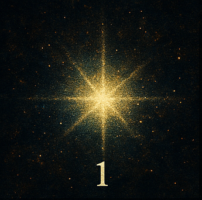
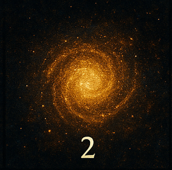
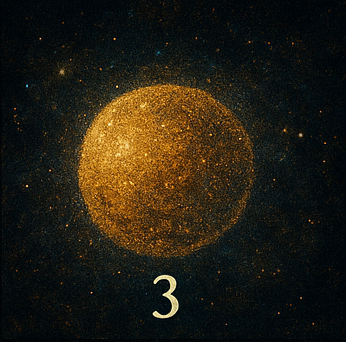
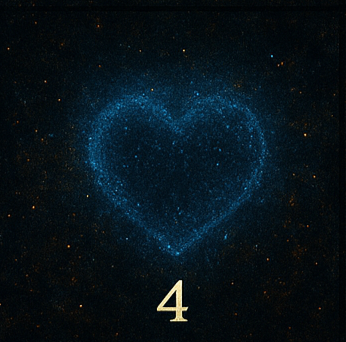
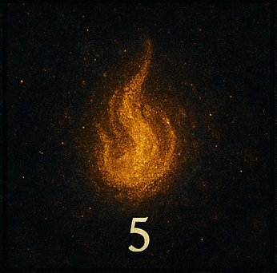
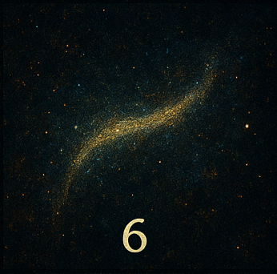
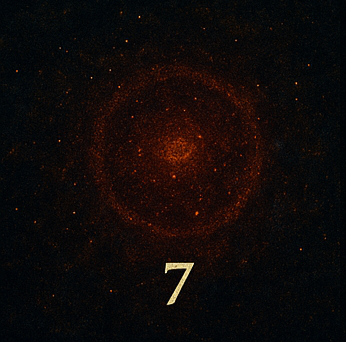
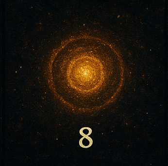
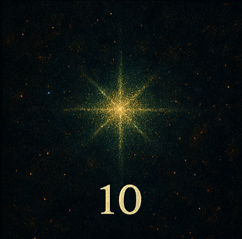

Eternal Stars Collection

The First Glow
Represents the instant when the first star was born in the universe. The starting point of light.
COA: Certificate of Authenticity – Eternal Stars, Artwork 1/10, Title: The First Glow, Artist: Luan Reinert, Year: 2025.

The Secret of the Cosmic Wind
A star that whispers invisible sounds across space, like an eternal symphony.
COA: Certificate of Authenticity – Eternal Stars, Artwork 2/10, Title: The Secret of the Cosmic Wind, Artist: Luan Reinert, Year: 2025.

Golden Reflection
A star that, instead of light, reflects cosmic gold — a symbol of spiritual wealth.
COA: Certificate of Authenticity – Eternal Stars, Artwork 3/10, Title: Golden Reflection, Artist: Luan Reinert, Year: 2025.

The Blue Heart
A cold, rare star that pulses like a distant heart in the void.
COA: Certificate of Authenticity – Eternal Stars, Artwork 4/10, Title: The Blue Heart, Artist: Luan Reinert, Year: 2025.

The Silent Flame
A star that burns without sound, only with soft invisible vibrations.
COA: Certificate of Authenticity – Eternal Stars, Artwork 5/10, Title: The Silent Flame, Artist: Luan Reinert, Year: 2025.

The Silver Veil
A luminous trail covering worlds, like a silver blanket over the universe.
COA: Certificate of Authenticity – Eternal Stars, Artwork 6/10, Title: The Silver Veil, Artist: Luan Reinert, Year: 2025.

The Red Enigma
A red star never deciphered; its light hides unrevealed secrets.
COA: Certificate of Authenticity – Eternal Stars, Artwork 7/10, Title: The Red Enigma, Artist: Luan Reinert, Year: 2025.

The Lens of Infinity
A star acting as a portal, reflecting infinity within itself.
COA: Certificate of Authenticity – Eternal Stars, Artwork 8/10, Title: The Lens of Infinity, Artist: Luan Reinert, Year: 2025.

The Emerald Song
A very rare green star resonating in tones of hope and life.
COA: Certificate of Authenticity – Eternal Stars, Artwork 9/10, Title: The Emerald Song, Artist: Luan Reinert, Year: 2025.

The Last Spark
The final star of the collection, symbolizing the last breath of light before eternity.
COA: Certificate of Authenticity – Eternal Stars, Artwork 10/10, Title: The Last Spark, Artist: Luan Reinert, Year: 2025.